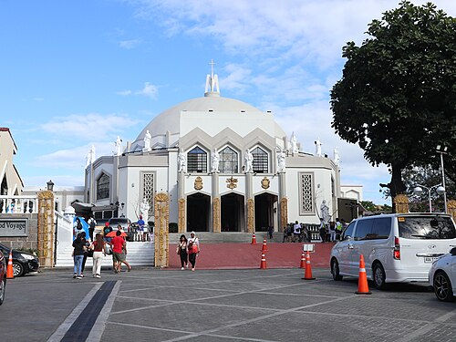
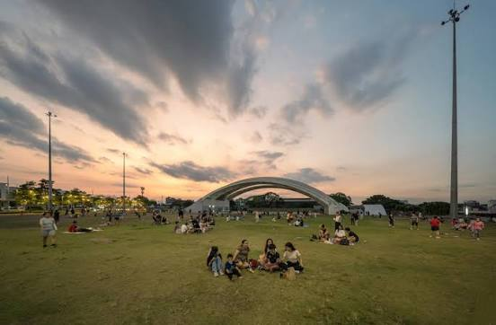

Antipolo Church
Spiritual Site | Rizal
I highly recommend visiting the Antipolo Church. The Diocese of Antipolo is an ecclesiastical jurisdiction...

My personal guide to the best coffee, chill spots, and budget meals around the city.
Spiritual Site | Rizal
I highly recommend visiting the Antipolo Church. The Diocese of Antipolo is an ecclesiastical jurisdiction...

Nature & Food | Tagaytay
A Tagaytay day tour is a perfect getaway. It features cool mountain weather, panoramic views...

Lifestyle Hub | Makati
Circuit Makati is a vibrant 21-hectare mixed-use riverfront development by Ayala Land.
